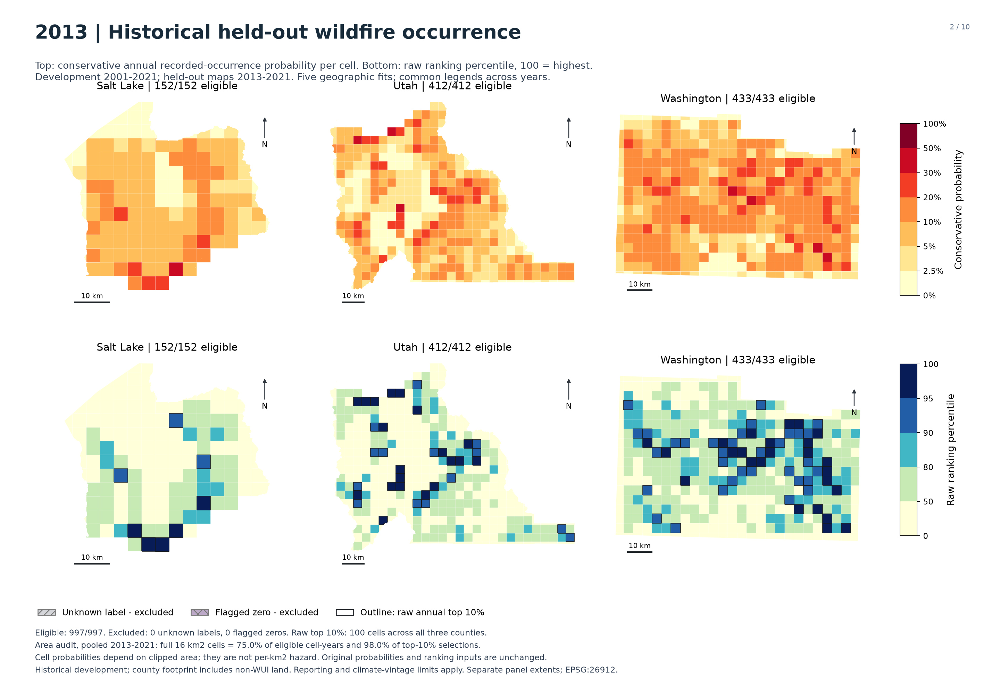
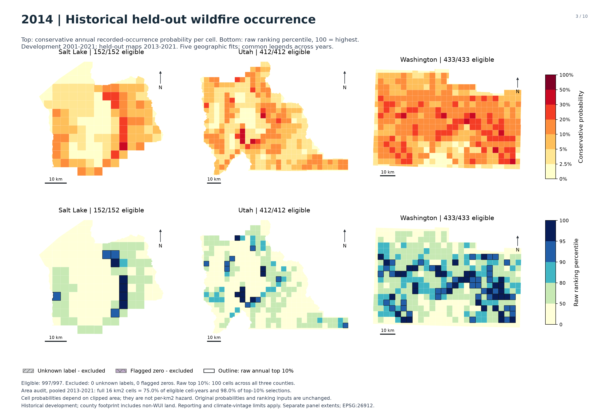
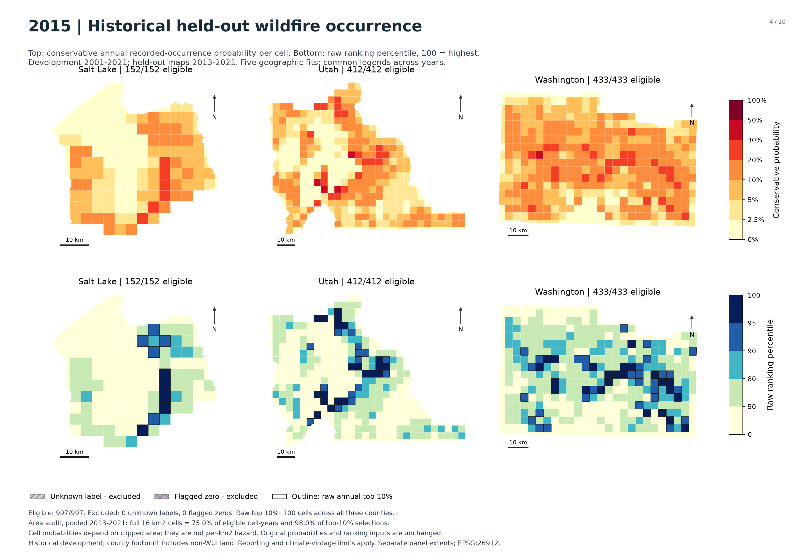
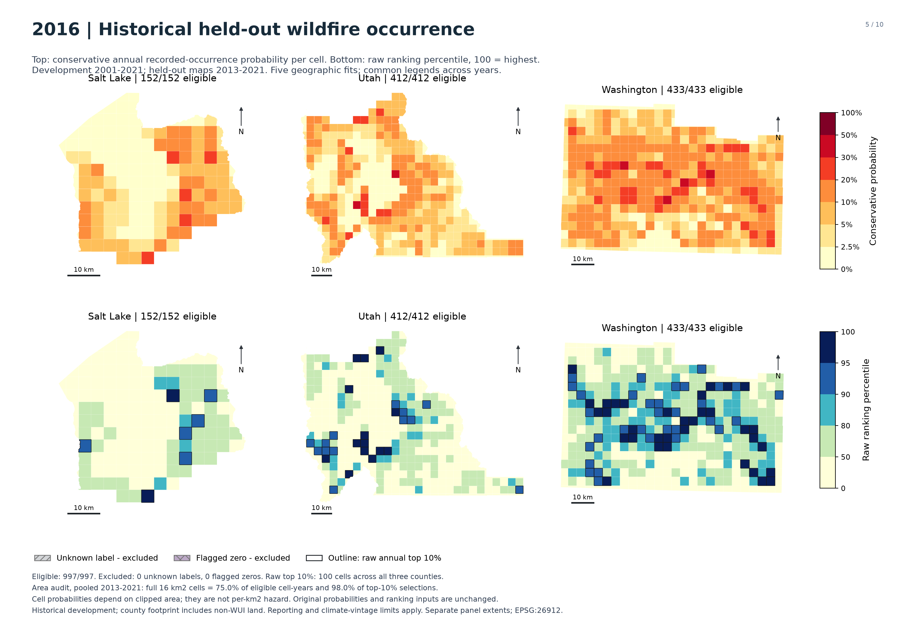
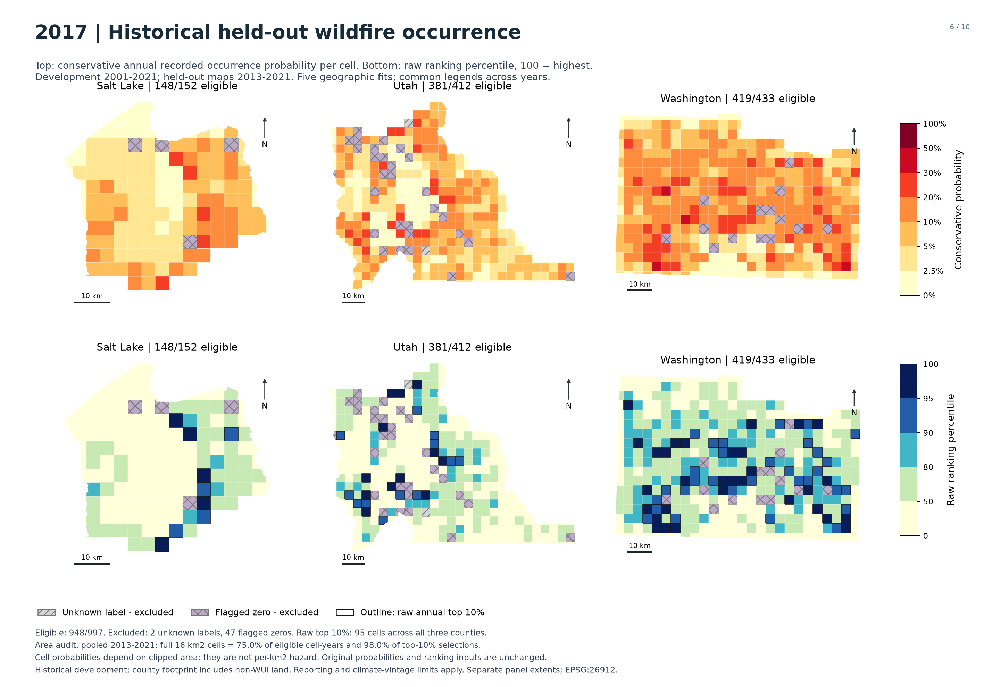
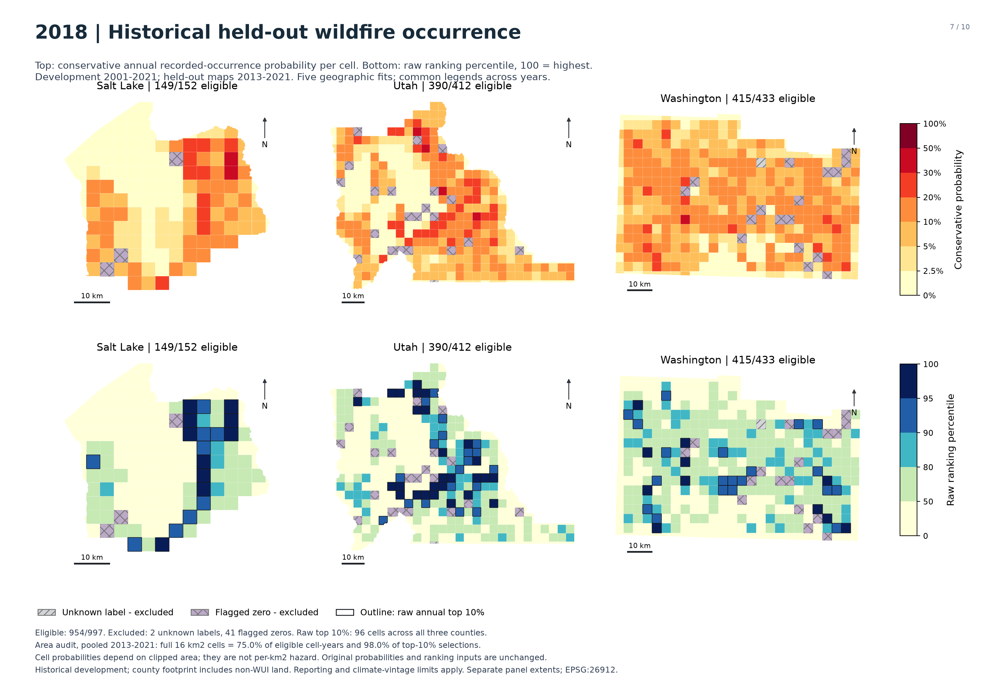
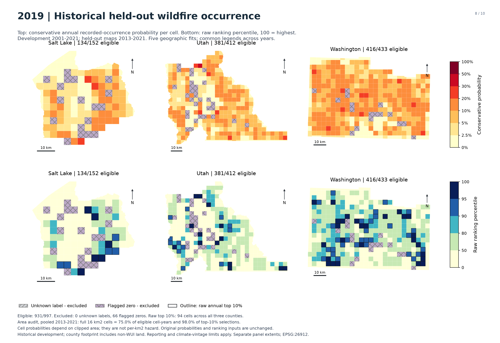
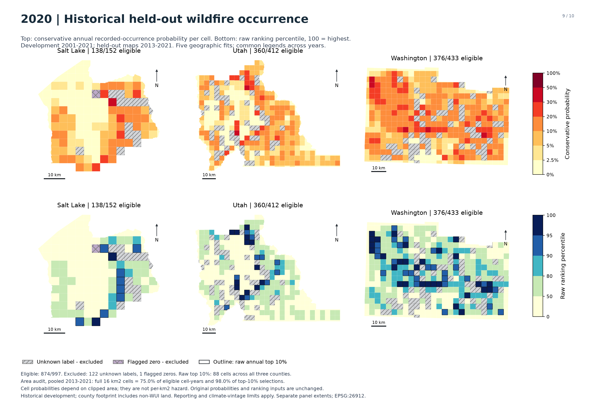
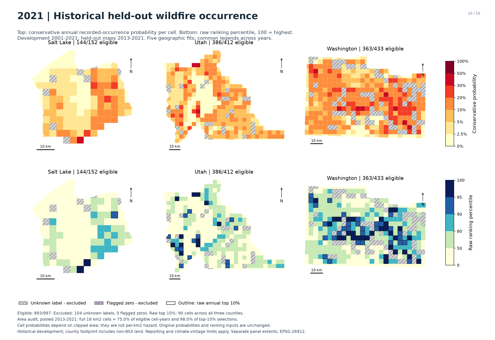

Utah wildfire occurrence modeling
This ML extension estimates the probability of at least one recorded wildfire discovery within a county-clipped grid cell during a UTC calendar year. It compares Random Forest and XGBoost using terrain and antecedent climate, then audits probability calibration, spatial validation, reporting coverage and the effect of unequal cell area. The frozen ML v1 recommendation uses conservative XGBoost probabilities and keeps raw XGBoost as the ranking reference.
The development experiment uses 2001-2021. Its held-out annual maps cover 2013-2021 across Salt Lake, Utah and Washington counties. Earlier years support training and calibration. The sample contains 997 nominal 4 km cells clipped to the county footprint, including land outside mapped WUI. The estimated quantity is recorded occurrence within the cell, rather than a property's chance of burning, fire severity or hazard per square kilometre.
Validation and model choice
These development years informed model and calibration choices. The results describe observations held out from individual fits, rather than an independent final evaluation. Contemporary terrain is treated as a static historical proxy; historical as-issued terrain and climate availability is unverified.
For each target year T, base training uses 2001 through T-3 and calibration uses T-2 and T-1. Five geographic folds use 20 km blocks with 4 km exclusion buffers. Median imputation is fitted only on permitted training rows. Across nine validation years, the comparison covers 8,588 eligible cell-years and 656 recorded-positive cell-years. A cell-year is one cell observed for one year; repeated cell-years are not independent locations.
The primary model combines 14 terrain and area predictors with six antecedent climate predictors. The climate reconstruction uses measurement windows before each January 1 cutoff and an assumed 60-day release lag; historical as-issued versions remain unverified. Known reviewed labels, including flagged zeros, remain in training and calibration. The held-out maps exclude 230 unknown-label cell-years and 155 flagged-zero cell-years. A further unknown-label development observation occurs before the mapped years.
Conservative XGBoost has mean annual Brier score 0.070814, compared with 0.071353 for raw XGBoost and 0.071341 for sigmoid-calibrated Random Forest. Lower Brier scores indicate better probability accuracy. Its relative reduction in mean annual Brier score versus saved past-rate forecasts is about 1%, so the probability gain is modest. Raw XGBoost retains the higher annual-average top-decile recall, 18.09% versus 17.42% for conservative probabilities. This is a development recommendation, without a claim of a statistically significant winner or operational readiness.
What the area audit changes about interpretation
There are 754 effectively full 16 km² cells and 243 clipped boundary cells. A full cell is within 0.000001 km² of 16 km². Area was the largest individual contributor in the saved model interpretation. Full cells account for 75.0% of eligible cell-years but 98.0% of both raw and conservative top-decile selections. These are pooled 2013-2021 shares: 846 of 863 selection slots, not counts of distinct locations.
Smaller cells also have lower recorded occurrence frequencies. Conservative probabilities average 3.22% in clipped cell-years, versus 3.03% recorded occurrence. Full-cell values are 10.04% and 9.17%. The pooled clipped result masks variation in the larger clipped cells:
| Original area in km² | Eligible cell-years | Mean conservative probability | Recorded occurrence | Raw top-decile slots |
|---|---|---|---|---|
| Below 4 | 770 | 1.35% | 0.00% | 0 |
| 4 to below 8 | 372 | 2.40% | 1.34% | 0 |
| 8 to below 12 | 398 | 2.73% | 2.76% | 0 |
| 12 to below 16 clipped | 606 | 6.40% | 8.09% | 17 |
| Full 16 | 6,442 | 10.04% | 9.17% | 846 |
The 12-to-below-16 km² group underpredicts recorded occurrence. No original prediction below 12 km² enters the raw or conservative top decile. The smallest group has no recorded positives in these holdouts, which does not establish zero underlying risk. Area is associated with geography and reporting; the observed pattern is consistent with differing observation footprints without proving a causal explanation.
A frozen-model sensitivity calculation set only the area input to 16 km². Conservative probabilities in clipped rows then averaged 7.61%, and 96 of 863 selections (11.1%) were replaced. The raw ranking replaced 86 selections (10.0%). Full-cell probabilities stayed unchanged, although some full cells lost ranking positions as competitors moved. Other inputs still described the original footprint, so these altered probabilities are a sensitivity diagnostic only. They are not a corrected forecast, an area-normalized risk estimate or evidence of improved accuracy. The portfolio maps retain the original probabilities and rankings.
Area does not explain the entire remaining shortfall. In eligible 2020 full cells, conservative probabilities averaged 10.51% against 15.73% recorded occurrence. Full cells account for 89.2% of that year's difference between recorded-positive cell count and summed conservative probabilities. Their probabilities did not change in the area-input diagnostic.
How to read the maps
The upper row shows conservative recorded-occurrence probabilities on a common probability legend. The lower row shows raw XGBoost ranking percentiles: 100 identifies the highest-ranked eligible cell for that year. Ranking percentiles are not probabilities. Dark outlines mark the original ceil(10% of eligible cells) annual selection budget across all three counties, not separate county budgets. Missing predictions are hatched as unknown labels or excluded flagged zeros; neither category means low risk.
Each annual view combines five geographic fits with the same frozen specification. Possible seams between fold regions and separate county-panel extents remain relevant when comparing locations. These are historical development holdouts, not current fire-danger forecasts. The footprint includes non-WUI land, and reporting completeness and retrospective climate availability limit interpretation.
Portfolio conclusion
Keep the frozen ML v1 decision and original predictions. Explain that observation area affects the probability of a recorded event within a cell and the resulting top-decile allocation. The area audit adds a boundary-cell qualification; it does not justify automatically dropping area, assigning every cell 16 km², or dividing probabilities by area. A future comparison of hazard on equal geographic support would require a separately defined target, grid or exposure model and development validation.
The contribution is a reproducible, spatially and temporally guarded modeling workflow with explicit probability, ranking and observation-area limitations. The verified descriptive baseline remains separate and unchanged. The frozen model and the 2024-2025 final-test data were not changed or revisited for this presentation update.
Supporting analysis
Annual probability and ranking maps
Top panels show conservative probability; bottom panels show raw ranking percentile. Outlines select the annual top 10% across the three counties. Hatched cells are excluded, not low risk. Every map is accompanied by text and county summaries.
2013 development holdout

Geographic comparison among eligible cells: Salt Lake has mean conservative probability 7.19% and 8 raw top-decile cells; Utah has mean conservative probability 7.59% and 34 raw top-decile cells; Washington has mean conservative probability 10.59% and 58 raw top-decile cells. County averages do not imply uniform conditions within a county; the mapped pattern is clustered, and panel scales differ.
| County | Eligible cells | Mean conservative probability | Raw top 10% cells |
|---|---|---|---|
| Salt Lake | 152 | 7.19% | 8 |
| Utah | 412 | 7.59% | 34 |
| Washington | 433 | 10.59% | 58 |
2014 development holdout

Geographic comparison among eligible cells: Salt Lake has mean conservative probability 5.99% and 9 raw top-decile cells; Utah has mean conservative probability 6.93% and 17 raw top-decile cells; Washington has mean conservative probability 12.01% and 74 raw top-decile cells. County averages do not imply uniform conditions within a county; the mapped pattern is clustered, and panel scales differ.
| County | Eligible cells | Mean conservative probability | Raw top 10% cells |
|---|---|---|---|
| Salt Lake | 152 | 5.99% | 9 |
| Utah | 412 | 6.93% | 17 |
| Washington | 433 | 12.01% | 74 |
2015 development holdout

Geographic comparison among eligible cells: Salt Lake has mean conservative probability 6.03% and 10 raw top-decile cells; Utah has mean conservative probability 7.26% and 36 raw top-decile cells; Washington has mean conservative probability 9.58% and 54 raw top-decile cells. County averages do not imply uniform conditions within a county; the mapped pattern is clustered, and panel scales differ.
| County | Eligible cells | Mean conservative probability | Raw top 10% cells |
|---|---|---|---|
| Salt Lake | 152 | 6.03% | 10 |
| Utah | 412 | 7.26% | 36 |
| Washington | 433 | 9.58% | 54 |
2016 development holdout

Geographic comparison among eligible cells: Salt Lake has mean conservative probability 5.61% and 7 raw top-decile cells; Utah has mean conservative probability 6.32% and 27 raw top-decile cells; Washington has mean conservative probability 9.95% and 66 raw top-decile cells. County averages do not imply uniform conditions within a county; the mapped pattern is clustered, and panel scales differ.
| County | Eligible cells | Mean conservative probability | Raw top 10% cells |
|---|---|---|---|
| Salt Lake | 152 | 5.61% | 7 |
| Utah | 412 | 6.32% | 27 |
| Washington | 433 | 9.95% | 66 |
2017 development holdout

Geographic comparison among eligible cells: Salt Lake has mean conservative probability 6.07% and 9 raw top-decile cells; Utah has mean conservative probability 6.63% and 24 raw top-decile cells; Washington has mean conservative probability 10.66% and 62 raw top-decile cells. County averages do not imply uniform conditions within a county; the mapped pattern is clustered, and panel scales differ.
| County | Eligible cells | Mean conservative probability | Raw top 10% cells |
|---|---|---|---|
| Salt Lake | 148 | 6.07% | 9 |
| Utah | 381 | 6.63% | 24 |
| Washington | 419 | 10.66% | 62 |
2018 development holdout

Geographic comparison among eligible cells: Salt Lake has mean conservative probability 7.14% and 19 raw top-decile cells; Utah has mean conservative probability 8.08% and 46 raw top-decile cells; Washington has mean conservative probability 9.02% and 31 raw top-decile cells. County averages do not imply uniform conditions within a county; the mapped pattern is clustered, and panel scales differ.
| County | Eligible cells | Mean conservative probability | Raw top 10% cells |
|---|---|---|---|
| Salt Lake | 149 | 7.14% | 19 |
| Utah | 390 | 8.08% | 46 |
| Washington | 415 | 9.02% | 31 |
2019 development holdout

Geographic comparison among eligible cells: Salt Lake has mean conservative probability 5.80% and 11 raw top-decile cells; Utah has mean conservative probability 6.49% and 26 raw top-decile cells; Washington has mean conservative probability 8.71% and 57 raw top-decile cells. County averages do not imply uniform conditions within a county; the mapped pattern is clustered, and panel scales differ.
| County | Eligible cells | Mean conservative probability | Raw top 10% cells |
|---|---|---|---|
| Salt Lake | 134 | 5.80% | 11 |
| Utah | 381 | 6.49% | 26 |
| Washington | 416 | 8.71% | 57 |
2020 development holdout

Geographic comparison among eligible cells: Salt Lake has mean conservative probability 6.17% and 10 raw top-decile cells; Utah has mean conservative probability 6.69% and 23 raw top-decile cells; Washington has mean conservative probability 11.12% and 55 raw top-decile cells. County averages do not imply uniform conditions within a county; the mapped pattern is clustered, and panel scales differ.
| County | Eligible cells | Mean conservative probability | Raw top 10% cells |
|---|---|---|---|
| Salt Lake | 138 | 6.17% | 10 |
| Utah | 360 | 6.69% | 23 |
| Washington | 376 | 11.12% | 55 |
2021 development holdout

Geographic comparison among eligible cells: Salt Lake has mean conservative probability 5.93% and 3 raw top-decile cells; Utah has mean conservative probability 7.15% and 24 raw top-decile cells; Washington has mean conservative probability 11.70% and 63 raw top-decile cells. County averages do not imply uniform conditions within a county; the mapped pattern is clustered, and panel scales differ.
| County | Eligible cells | Mean conservative probability | Raw top 10% cells |
|---|---|---|---|
| Salt Lake | 144 | 5.93% | 3 |
| Utah | 386 | 7.15% | 24 |
| Washington | 363 | 11.70% | 63 |
Observation area and model interpretation
The original 997 nominal 4 km cells are clipped to the three-county footprint. Of these, 754 are effectively full 16 km² cells and 243 are smaller boundary cells. The maps estimate at least one recorded wildfire discovery within each original footprint.
Full cells make up 75.0% of eligible 2013–2021 cell-years and 98.0% of both raw and conservative top-decile slots: 846 of 863 selections. These are repeated annual selection slots, not distinct locations. No original prediction in cells below 12 km² enters either top decile.
Conservative probabilities average 3.22% in clipped cells against 3.03% recorded occurrence, versus 10.04% and 9.17% in full cells. The pooled clipped result hides underprediction in the 12-to-below-16 km² group: 6.40% predicted versus 8.09% observed. The smallest group has no recorded positives, which does not establish zero underlying risk.
Frozen-model sensitivity
Setting only the area input to 16 km² raises the clipped-cell conservative mean to 7.61% and replaces 96 of 863 conservative selections (11.1%). Raw ranking replaces 86 selections (10.0%). Other inputs still describe the original footprint, so the changed predictions are a sensitivity diagnostic. They are not corrected forecasts, a causal effect or an accuracy improvement. The publication maps retain the original predictions and rankings.
Area does not explain the remaining 2020 shortfall. Full-cell conservative probabilities average 10.51%, against 15.73% recorded occurrence. Full cells account for 89.2% of the gap between recorded-positive counts and summed conservative probabilities; their predictions are unchanged by the area-input perturbation.
Area has the largest individual contribution in the saved model explanation. Contributions describe the fitted model and can share attribution with correlated predictors; they do not establish a causal driver. A separate target or exposure model would be needed to compare hazard on equal geographic support.
Supporting evidence
- Original area summaries
- Annual area summaries
- Sensitivity summaries
- Area-audit report
- Held-out feature importance
- Interpretation report
Full original notebooks and model checkpoints remain in the preserved analytical workspace. The publication package offers portable saved evidence without invoking those execution paths.
Sources and historical availability
The release uses retained snapshots. The metadata review on October 16, 2026 checked source documentation; it did not refresh incident records or climate observations. Source provenance records the source file hashes, copied assets and presentation transformations.
| Source | Role and retained vintage | Interpretation |
|---|---|---|
| NIFC InFORM public fire-occurrence layer | Primary recorded-wildfire label source, retained with the October 2026 baseline; only reviewed 2001–2021 labels support this release | Discovery-date cell-years; no-record labels are not verified absences. Status and source-system changes around 2020 cannot separate reporting changes from real fire variation. |
| State of Utah, SGID county boundaries | County service response acquired October 15, 2026; fixed three-county footprint in EPSG:26912 | Administrative study boundaries; county-clipped area varies. This is not a reconstruction of historical boundaries. |
| USGS 3DEP / National Elevation Dataset 1 arc-second | Retained 148-item catalog acquired October 15, 2026; aligned 30 m elevation, slope and aspect | Catalog publication dates span 2013–2026 and do not establish observation dates. Contemporary terrain is a static historical proxy. |
| John T. Abatzoglou, gridMET | Retrospective subset archive completed October 16, 2026; source days October 1, 1999 through September 30, 2020 | Supports target years 2001–2021 with pre-cutoff windows and an assumed 60-day release lag. Historical as-issued versions are unverified. |
The six climate features summarize precipitation, mean temperature and vapor-pressure deficit over the antecedent October–September year and July–September season. Area-weighted native climate-pixel intersections are used. The model does not acquire target-year weather. Neither the conservative lag nor a current archive proves what was available at every historical cutoff.
Public FPA FOD and agency/dispatch material used during reconciliation provide supporting checks, not a replacement primary label source or complete independent reporting census. Reporting participation was not obtained from all agencies. The final decision retains known reviewed labels, including flagged zeros, in training and calibration and excludes the frozen 155 flagged zeros from evaluation. There are 231 unknown development exclusions, of which 230 fall in the mapped years.
Source citations
- NIFC InFORM public layer metadata identifies the incident fields. NIFC reporting-system documentation explains InFORM, IRWIN and upstream reporting workflows; it does not establish completeness in this study.
- State of Utah, SGID county boundaries identifies UGRC and the Lieutenant Governor's Office as stewards. Credit: State of Utah, SGID.
- USGS 3D Elevation Program. Credit: U.S. Geological Survey. See the retained terrain policy for transformations and the static-terrain assumption.
- Abatzoglou, J. T. (2013). Development of gridded surface meteorological data for ecological applications and modelling. International Journal of Climatology, 33, 121–131. gridMET documentation and citation; DOI 10.1002/joc.3413. The documentation identifies recent values as preliminary and describes the approximate 4 km spatial support.
Raw source archives are not included. The release contains original analysis summaries, cell-year prediction attributes, maps and selected provenance. License and attribution notes distinguish the project's material from source-provider conditions.
Reproducing the presentation
Release reference: ml-v1.0.0 identifies the frozen ML presentation release underlying this case study. The original release remains unchanged.
Offline viewing and integrity
Open index.html after extracting the complete folder. It has no scripts, remote fonts, tracking, fetched data or CDN dependencies. Maps, text descriptions and county summaries are included locally. The PDF and notebook provide alternative views. External citation links are optional.
Python 3.10 or later is sufficient for the viewer. python -I -S viewer.py --verify checks every manifest-listed file against SHA-256 and size. python -I -S viewer.py --build deterministically rebuilds the HTML from included text, metadata and map descriptions. Both commands locate inputs relative to the script, so they work from another current directory. No packages need installing and no data are downloaded.
Optional notebook and atlas rebuilding
Open wui_ml_v1_snapshot.ipynb with an ordinary Python Jupyter kernel. Keep the notebook in the release folder and retain DATA_MODE = "snapshot". Its code imports only Python standard-library modules and IPython display helpers. It reads local saved tables, verifies hashes and embeds the nine maps; it performs no inference or fitting. Use JupyterLab and ipykernel in a separate environment if they are not already installed. See tested viewer versions; these are a test record, not requirements for viewing HTML.
The optional PDF builder is tools/build_atlas.py. It uses ReportLab 4.4.9 and the included images and descriptions. Run python tools/build_atlas.py in an environment containing ReportLab. The atlas is deterministic under the tested runtime. The HTML has semantic headings, meaningful image descriptions and native tables. The PDF adds searchable text to every page but is not certified as tagged PDF/UA.
During notebook execution, the viewer checks the notebook's cell sources and every other release file. The command-line verifier checks the entire notebook file, including saved outputs. Rerunning and saving the notebook may change output metadata and therefore its file checksum; retain the original ZIP as the release reference.
Scope of analytical reproducibility
This is a verified snapshot and presentation release. It does not claim end-to-end model retraining from the files included here. The original frozen feature matrices, imputer/calibration splits, 45 model checkpoints, complete raw archives and analytical notebooks are retained separately. The frozen specification, recorded analysis versions and source hashes identify the evidence lineage; they are not a complete installable training environment.
Reproducing the original fits would require those exact inputs and code, the original geospatial environment, and the dedicated 2001–2021 annual-backtest entry point with the preserved buffers, exclusions and calibration chronology. That is outside this publication release. Do not use a run-all command across historical experiment notebooks: earlier workflows include final-test execution beyond the scope of this package. No raw-data refresh, model fitting or final-test evaluation is needed to reproduce the presentation.
Metric definitions
The model comparison uses equal-weight means across nine annual holdouts after combining spatial folds. Brier score is the mean squared error between predicted probability and a binary recorded-occurrence outcome; lower is better. About 1% improvement means a relative reduction in mean annual Brier versus past-rate forecasts. Top-decile recall is the share of recorded-positive cell-years captured within each annual selection budget. Pooled captures have different year weights from annual-average recall.
Cell-year field definitions explain predictions and exclusions. Each row in map_attributes.csv is a fixed cell in one held-out year. Excluded rows have no prediction. The dictionary also describes geometry in the original GIS artifact; this release's CSV contains attributes only, and its maps are static images. County summaries are descriptive means and counts of eligible cells, not additional validation experiments.
License and attribution
The MIT license applies to Adam Valentino's original code and documentation in this package. It does not replace third-party data terms. No provider logos, raw incident records, terrain tiles, boundary-service response or climate NetCDF files are bundled.
The map images, aggregate result tables and development cell-year attributes are project analysis outputs. Cite this project and acknowledge the underlying sources when reusing them. Maps use the derived county-clipped grid and no external basemap tiles. Included attributes use stable cell-year IDs, not named incident records.
Source-specific notes
- USGS 3DEP: the program page states that 3DEP products are available without use restrictions. Credit U.S. Geological Survey. The program's statement does not license unrelated third-party material.
- Utah county boundaries: the SGID dataset page states that the dataset has no use constraints or warranties and encourages attribution to State of Utah, SGID. The administrative boundaries do not represent exact legal boundaries.
- gridMET: the provider documentation describes John Abatzoglou's waiver of copyright and related rights to the extent possible under law. Credit gridMET and the Abatzoglou (2013) paper identified in the source guide.
- NIFC InFORM: credit NIFC and contributing reporting agencies. The public layer metadata has an empty copyright field; this package does not treat that as a blanket license. Raw InFORM records are not redistributed here. Consult the source service when obtaining source records.
These notes document provider statements checked October 16, 2026 and the material actually distributed. They do not grant rights to unbundled source archives. Python, Jupyter and ReportLab are optional external tools and are not vendored in this release.
Downloads and evidence
- Map atlas with searchable text captions
- Executed snapshot notebook
- Frozen model decision, publication copy and exact specification
- All map descriptions and captions
- Cell-year predictions and eligibility, 2013–2021 CSV
- Model comparison CSV and annual comparison CSV
- Source and transformation provenance
- Release validation and file checksums
- Citation, code and documentation license, publication handoff